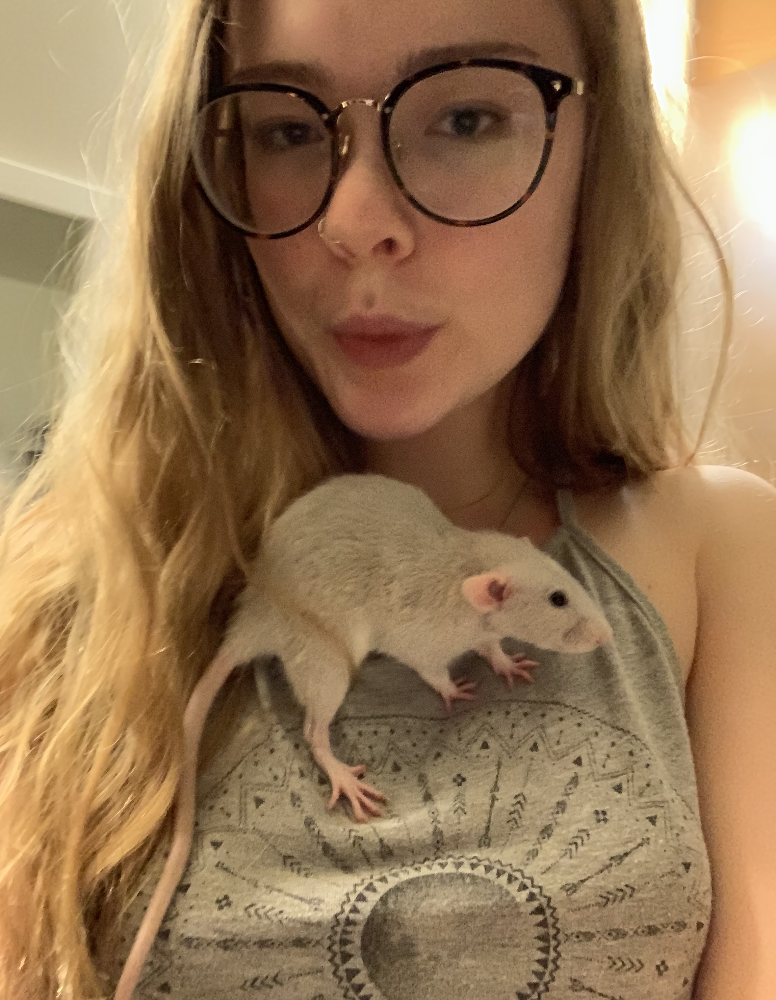
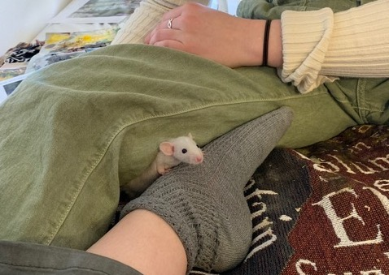

Like Frida, I named her after a female artist, Artemisia Gentileschi, but shortened it for ease of pronunciation and in reference to the goddess of the hunt.
I call her the old man because she's skinny and shy and I sometimes worry about her health. She can usually be found chillin' in the corner, eyes half closed as if she's stoned, disinterested in Frida's antics.
Once I made her a vet appointment after Googling the seeming respiratory symptoms she exhibited in the video above. (I concluded she had a deadly rat virus which would take out all the other rats and could even infect me.) Fortunately, she was healthy again once the appointment came around, saving me $56 and my imagined case of rat brain fever!

Artemis and Frida have been best friends since I got them as a pair of babies. They were so small I almost thought I'd been conned into buying mice, but now that they've more than doubled in size, I'm pretty certain they're rats.
I feed them a daily diet of pet store kibbles, but supplement with fruits, veggies, and grains for nutritious treats to round out their diets (read: to make them love me.)